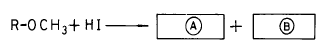

임산가공산업기사 (2003-08-10 기출문제)
1과목: 목재이학
1. 목재의 열전도도(熱傳導度)에 대한 설명 중 옳은 것은?
- 목재는 열의 전도가 잘 안되는 부도체이다.
- 목재는 열의 전도가 잘 되는 양도체이다.
- 목재의 열전도는 금속물질과 거의 비슷하다.
- 목재는 열의 전도가 금속물질보다 훨씬 잘 되는 물체이다.
(정답률: 알수없음)

2. 휨강도시험에서 두께와 폭은 각각 3cm이고 스팬의 길이가 42cm인 시험편에 중앙집중하중을 가하였을 때 최대 하중이 320kg이었다면, 휨강도는?
- 635 kg/cm2
- 694 kg/cm2
- 747 kg/cm2
- 796 kg/cm2
(정답률: 알수없음)
3. 목재에 있어서 압축강도가 가장 큰 것은 어느 방향인가?
- 반경방향
- 접선방향
- 촉단방향
- 섬유방향
(정답률: 알수없음)
4. 일반적으로 목재에 인장 또는 압축력을 가하여 파괴하중에 도달할때 그 판목면의 파괴면은 응력의 방향에 대하여 대체로 몇 도로 파괴되는가?
- 0°
- 15°
- 45°
- 90°
(정답률: 알수없음)
5. 전건목재의 평균비열은?
- 0.224 cal/g℃
- 0.324 cal/g℃
- 0.424 cal/g℃
- 0.524 cal/g℃
(정답률: 알수없음)
6. 열전도율(열전도도)의 단위는 다음 중 어느 것인가?
- [kcal/kg·℃]
- [kcal/m·hr·℃]
- [kcal]
- [kcal/m2]
(정답률: 알수없음)
7. 목재의 3방향별 수축팽윤의 비율을 큰 순서로 나열하면?
- 방사방향 - 접선방향 - 섬유방향
- 섬유방향 - 방사방향 - 접선방향
- 접선방향 - 방사방향 - 섬유방향
- 접선방향 - 섬유방향 - 방사방향
(정답률: 알수없음)
8. 다음 중 목재(木材)의 팽창구분에 속하지 않는 것은?
- 점팽창
- 선팽창
- 면팽창
- 용적팽창
(정답률: 알수없음)
9. 상온에서 목재의 섬유포화점에 가장 가까운 값은 어느 것인가?
- 약 20%
- 약 30%
- 약 40%
- 약 50%
(정답률: 알수없음)
10. 목재내의 자유수에 대한 설명 중 옳지 않은 것은?
- 세포 간의 간극 또는 세포 내강에 유리상태로 존재하는 수분이다.
- 섬유포화점 이상의 수분으로 중량에 영향을 미친다.
- 목재의 물리적· 기계적 성질에 거의 영향을 미치지 않는다.
- 세포 내에서 내부 압력차에 의하여 자유로이 이동할 수 없는 수분이다.
(정답률: 알수없음)
11. 생재중량 35g, 전건중량 10g인 목재의 전건중량에 의한 함수율은?
- 100 %
- 150 %
- 200 %
- 250 %
(정답률: 알수없음)
12. 다음 가운데 비중의 종류가 아닌 것은?
- 전건비중
- 기건비중
- 생재비중
- 절대비중
(정답률: 알수없음)
13. 목재의 비중에 관계되지 않은 것은?
- 목재의 물리적 성질
- 목재의 기계적 성질
- 목재의 화학적 성질
- 목재의 전기적 성질
(정답률: 알수없음)
14. 내부할렬(honey comb)은?
- 표면경화 후기에 내부에 생긴 할렬이다.
- 표면경화 전기에 내부에 생긴 할렬이다.
- 내부 압축응력에 의하여 형성된 할렬이다.
- 외부 타격에 의하여 생긴 할렬이다.
(정답률: 알수없음)
15. 목재의 비열 변이에 가장 영향이 적은 인자는?
- 온도
- 함수율
- 화학적조성
- 밀도
(정답률: 알수없음)
16. 고주파 건조를 할 때 목재 내부의 증기압은 어떻게 되는 가?
- 외부보다 낮다.
- 외부보다 높다.
- 외부와 같다.
- 외부보다 낮거나 같다.
(정답률: 알수없음)
17. 목재의 건조전 나비가 10.8cm, 건조후 나비가 10.0cm일 때 수축율은 얼마인가?
- 7.4%
- 9%
- 10%
- 10.8%
(정답률: 알수없음)
18. 생재가 섬유포화점 이하로 건조된 이후에는 나타나지 않고 건조 초기에 섬유포화점 이상에서 자유수가 제거되는 동안 나타나는 현상은?
- 틀어짐
- 표면할렬
- 찌그러짐
- 표면경화
(정답률: 알수없음)
19. 마이크로 피브릴 경사각이 커지면 섬유방향 수축율은?
- 커진다.
- 작아진다.
- 일정하다.
- 세포의 종류에 따라 다른다.
(정답률: 알수없음)
20. 다음 가운데 용적밀도수(容積密度數)의 단위는?
- g/cm3
- kg/m3
- g/m3
- kg/cm3
(정답률: 알수없음)
2과목: 목재화학
21. 고분자 물질인 α - 셀룰로오스를 구성한 6각형의 글루코 피라노스의 직경이 5.2Å이고, 중합도가 10,000 개 라면 셀룰로오스 체인의 총길이는?
- 1.0 ㎛
- 3.2 ㎛
- 4.2 ㎛
- 5.2 ㎛
(정답률: 알수없음)
22. 침엽수재는 Xylan 이 몇 % 정도 들어 있는가?
- 5∼10 %
- 10∼15 %
- 15∼20 %
- 25∼30 %
(정답률: 알수없음)
23. 목재의 화학적 조성에 대한 설명으로 거리가 먼 것은?
- 목재 세포벽은 리그닌을 골격으로 형성되어 있다.
- 목재의 원소 조성은 C, H, O, 미량의 무기물, 질소 등이다.
- 모든 수종에는 셀룰로오스, 헤미셀룰로오스, 리그닌이 존재한다.
- 목재 중에 가장 많이 존재하는 원소는 탄소이다.
(정답률: 알수없음)
24. 72% 황산 용액을 사용하여 리그닌을 분석하는 방법은?
- 리그닌 메톡실기 정량법
- 산 가용성 리그닌 정량법
- 클라손 리그닌 정량법
- 티오 리그닌 정량법
(정답률: 알수없음)
25. 목재의 원소 조성 중 수소가 차지하는 비율은?
- 6 %
- 16 %
- 26 %
- 36 %
(정답률: 알수없음)
26. 활엽수에 존재하는 리그닌의 양은?
- 10 %
- 20 %
- 30 %
- 40 %
(정답률: 알수없음)
27. 목재 중 methoxyl기 정량의 한 방법으로 요오드화수소산 (沃化水素酸)을 사용 한다. 다음 반응식에서 A 와 B는?

- Ⓐ R-OH, ⒷCH3I
- ⒶR-OH, ⒷHCOOH
- Ⓐ CH3OH, ⒷHI
- ⒶCH3OH, Ⓑ I2
(정답률: 알수없음)
28. 전건중량 100g의 목재 내에 함유되어 있는 회분의 량은?
- 1g 이하
- 5g
- 10g
- 15g
(정답률: 알수없음)
29. 일반적으로 Methoxyl기(CH3O-)는 침엽수재의 Lignin에 몇% 정도 있는가?
- 10 - 12 %
- 14 - 16 %
- 19 - 20 %
- 22 - 25 %
(정답률: 알수없음)
30. 리그닌(Lignin)에 대한 기술 중 옳지 않은 것은?
- 친수성(親水性)
- 방향족 화합물
- 페닐프로판(phenyl - propane)[C6 - C3]으로 구성
- 2차벽(중층)에 주로 존재
(정답률: 알수없음)
31. 셀룰로오스의 치환반응에서 최대 치환도는 얼마인가?
- 1
- 3
- 10
- 100
(정답률: 알수없음)
32. 목분을 톨루엔에 침적하여 진동 볼밀로 분쇄한 후 물 : dioxane의 혼합액으로 추출하여 단리한 리그닌은?
- 마쇄 리그닌(MWL)
- 소오다 리그닌
- 알칼리 리그닌
- 크라프트 리그닌
(정답률: 알수없음)
33. 셀룰로오스 시료를 17.5% NaOH 용액으로 처리한 후 얻어지는 불용부의 셀룰로오스는?
- α - 셀룰로오스
- β - 셀룰로오스
- γ - 셀룰로오스
- 아세틸셀룰로오스
(정답률: 알수없음)
34. 리그닌 분석용으로 사용되는 시료는 어떤 유기용매로 탈지시키는가?
- 에틸알콜-벤젠 혼합액
- 에틸알콜
- 벤젠
- 아세톤
(정답률: 알수없음)
35. 셀룰로오스의 화학적 구조에 대한 설명으로 옳지 않은 것은?
- 셀룰로오스의 분자식은 (C6H10O5)n이다.
- 셀룰로오스 구조에서 1번 탄소는 헤미아세탈 결합을 하므로 쉽게 가수분해된다.
- 셀룰로오스는 L-glucose 잔기가 α -1,4-glucoside 결합을 하고 있다.
- 셀룰로오스는 glucose 를 단위체로 하는 고분자이다.
(정답률: 알수없음)
36. 활엽수재 헤미셀룰로오스 중 가장 많은 것은?
- 글루쿠로노자일란
- 갈락토글루코만난
- 아라비노갈락탄
- 글루코만난
(정답률: 알수없음)
37. 목재중의 알코올은 어떤 상태로 존재 하는가?
- 스테롤상태
- 지방성 알코올
- 저급 지방산
- 지방성 알코올과 스테롤상태
(정답률: 알수없음)
38. 헤미셀룰로오스를 분해하여 얻을 수 없는 것은?
- 펜토스(pentose)
- 헥소스(hexoce)
- 우론산(uronic acid)
- 술폰산(sulfonic acid)
(정답률: 알수없음)
39. 침엽수재 수지의 주요 Sterol은?
- β -sterol
- α -sterol
- β -sitosterol
- phytosterol
(정답률: 알수없음)
40. 목재를 구성하고 있는 탄수화물을 가장 분해가 적은 섬유 상태로 얻는 분석방법은?
- 알코올추출법
- 72% 황산처리법
- 아염소산나트륨 반복처리법
- 13% 염산증류법
(정답률: 알수없음)
3과목: 펄프제지학
41. 지료의 미세분(fine)이란 몇 메쉬 스크린 통과분을 뜻하는가?
- 100mesh
- 200mesh
- 300mesh
- 400mesh
(정답률: 알수없음)
42. 열기계 펄프(TMP)제조법의 가장 큰 문제점은?
- 미세 섬유가 많다.
- 수종 선택성이 크다.
- 동력 소비량이 크다.
- 변질 및 강도가 약하다.
(정답률: 알수없음)
43. 펄프에서 종이를 제조하는 과정의 공정이 옳게 나열된 것은?
- 사이징→ 비이팅→ 염색→ 필라첨가→ 정제 및 정선→초지 및 완성
- 비이팅→ 사이징→ 염색→ 필라첨가→ 정제 및 정선→초지 및 완성
- 비이팅→ 필라첨가→ 염색→ 사이징→ 정제 및 정선→초지 및 완성
- 비이팅→ 사이징→ 필라첨가→ 염색→ 정제 및 정선→초지 및 완성
(정답률: 알수없음)
44. 펄프의 고해에 쓰이는 기계는?
- 쇄목기
- 펄퍼
- 센트리크리너
- 리파이너
(정답률: 알수없음)
45. 반화학 펄프(pulp)의 수율(收率)은 원료중량의 몇 % 정도인가?
- 45∼65%
- 55∼75%
- 75∼95%
- 65∼85%
(정답률: 알수없음)
46. 크라프트 펄프화법과 아황산 펄프화법을 비교 설명한 것중 옳은 것은?
- 크라프트펄프 증해 시간은 아황산펄프 증해 시간보다 증해 시간이 길다.
- 크라프트펄프는 아황산펄프보다 수종에 제한을 받는 다.
- 크라프트펄프는 아황산펄프보다 종이 강도가 세다.
- 크라프트펄프 증해 온도는 아황산펄프 증해 온도보다 낮다.
(정답률: 알수없음)
47. 쇄목 펄프(GP)보다 리파이너 쇄목펄프(RGP)의 품질이 우수한 점은?
- 종이의 인열강도 및 백색도가 높다.
- 장섬유가 많고 섬유 손상이 적다.
- 종이의 구성이 좋고 지질이 치밀하다.
- 섬유가 유연하고 리그닌 함량이 낮다.
(정답률: 알수없음)
48. 내부 사이징의 목적은?
- 강도 증강
- 평활성 증강
- 내수성 증강
- 백색도 증강
(정답률: 알수없음)
49. 우리나라에서 가장 많이 이용되고 있는 쇄목펄프 제조장치의 타입은 어느 것인가?
- 포켓형(Pocket type)
- 매가진형(Magazine type)
- 링형(Ring type)
- 연속형(Continuous type)
(정답률: 알수없음)
50. 고해의 1 차 효과가 아닌 것은?
- 섬유 외층 제거
- 내부 피브릴화
- 섬유 절단
- 결속 섬유 형성
(정답률: 알수없음)
51. 목재펄프로 부터 종이를 만드는 공정은?
- 조성→ 고해→ 성형→ 건조→ 압착
- 고해→ 조성→ 성형→ 압착→ 건조
- 조성→ 고해→ 건조→ 성형→ 압착
- 건조→ 조성→ 고해→ 성형→ 압착
(정답률: 알수없음)
52. 염소 gas(Cl2)로 펄프를 표백할 경우 pH 는 어느 정도로 유지해야 하는가?
- pH 2 이하
- pH 4∼6
- pH 8∼10
- pH 10 이상
(정답률: 알수없음)
53. 목재 펄프로서 부적당한 조건은?
- 섬유의 길이가 길고 질길 것
- 산과 알칼리에 대한 저항성이 적을 것
- cellulose의 함량이 클 것
- 수지(rosin)가 적을 것
(정답률: 알수없음)
54. 펄프표백에 사용되는 약품을 기술한 것 중 옳지 않은 것은?
- 염소
- 염소산나트륨
- 수산화나트륨
- 아염소산나트륨
(정답률: 알수없음)
55. 저장 체스트의 지료농도는 3~4% 이나 헤드박스로 공급되는 지료의 농도는 0.3~1.25% 로 낮아진다. 그 이유는?
- 백수의 혼합
- 물의 혼합
- 장섬유의 제거
- 미세섬유 및 충전물의 제거
(정답률: 알수없음)
56. 펄프 중에 섬유의 해리가 불완전한 결속섬유나 섬유의 길이와 두께가 너무 크고 강직하여 초지(抄紙)에 적합하지 않아 기계적 처리를 하여 펄프의 성질을 초지에 알맞도록 조절하는 지료조성 공정은?
- 고해(beating)
- 사이징(sizing)
- 충정(loading)
- 착색(coloring)
(정답률: 알수없음)
57. 안료 분산제에 대한 설명으로 옳지 않은 것은?
- 안료 입자의 젖음을 촉진시킨다.
- 슬러리 점도를 떨어뜨린다.
- 안료 입자의 표면 전위를 강하게 하여 응집력을 저해 시킨다.
- 전분과 같은 분산제는 입자를 균일하게 조절한다.
(정답률: 알수없음)
58. 펄프의 백색도 안정화를 파괴하는 인자와 거리가 먼 것은?
- 빛
- 산소
- 온도
- 점도
(정답률: 알수없음)
59. 섬유미세분에 의해 야기되는 현상이 아닌 것은?
- 탈수성 저하
- 백수 농도 저하
- 폐수처리 부하 증가
- 밀도 증가
(정답률: 알수없음)
60. 크라프트법의 증해액은?
- H2SO3 + Ca(HSO3)2
- NaOH + Na2S
- Na2CO3 + SO2
- Na2SO3 + NaHCO3
(정답률: 알수없음)
4과목: 임산제조학
61. 합판 원목을 연화(軟化)하기 위하여 스티밍(Steaming)을 하는 경우 원목 온도와 처리 온도와의 차이 중 가장 적합한 것은?
- 10 - 20℃
- 20 - 30℃
- 30 - 40℃
- 40 - 50℃
(정답률: 알수없음)
62. 다음 중 목재에 변색을 일으키는 균은 주로 어느 균인가?
- 자낭균류
- 세균류
- 담자균류
- 조균류
(정답률: 알수없음)
63. 목재의 내부에 벌집모양으로 나타나는 건조 결함은?
- 측렬
- 내부할렬(honey combing)
- 콜렙스(collapse)
- 재면할렬
(정답률: 알수없음)
64. 원목의 직경이 160cm 되는 것을 로우터리 단판 제조법에 의해 제조할 때 2회전하면 단판은 약 몇 m 나 얻을 수 있는가?
- 6m
- 8m
- 10m
- 12m
(정답률: 알수없음)
65. 목재 건조시 발생하는 표면 할렬은?
- 주로 건조 중에 형성된다.
- 주로 건조 초기에 형성된다.
- 주로 건조 후반에 형성된다.
- 주로 건조 최종기에 형성된다.
(정답률: 알수없음)
66. 합판 제조시 압체압력(壓締壓力)은 목재조직을 압궤(壓潰)하지 않는 정도로 목재의 비중에 의해 정하는데 비중 0.5 - 0.6의 라왕류에서는 통상 압체 압력을 얼마로 하면 되겠는가?
- 4 - 6 kg/cm2
- 8 - 10 kg/cm2
- 12 - 14 kg/cm2
- 16 - 20 kg/cm2
(정답률: 알수없음)
67. 항율 건조 기간이란?
- 섬유 포화점이하에서 전건까지의 건조기간
- 섬유 포화점에서 기건까지의 건조기간
- 생재에서 섬유 포화점까지의 건조기간
- 생재에서 전건까지의 건조기간
(정답률: 알수없음)
68. 천연건조할 때 앤드 코팅(end coating)의 주요 목적은?
- 횡단면 할렬 방지
- 표면 할렬 방지
- 내부 할렬 방지
- 표면 경화 방지
(정답률: 알수없음)
69. 합판 가공의 특성이 될 수 없는 것은?
- 이방성이 감소한다.
- 할렬성이 감소한다.
- 열과 소리의 전도성이 감소한다.
- 강도를 판면에 고르게 분포시킨다.
(정답률: 알수없음)
70. 목재 내의 정유물질을 가장 일반적으로 채취할 수 있는 방법은 어느 것인가?
- 수증기 증류법
- 압착법
- 추출법
- 흡수법
(정답률: 알수없음)
71. 농황산법에 의한 목재 당화시 일반적으로 사용하는 황산의 농도는?
- 10 - 20%
- 30 - 40%
- 50 - 60%
- 70 - 80%
(정답률: 알수없음)
72. 목재 분말에 산(酸)을 가하여 상온에서 가수분해 할 수있는 산의 농도는?
- 10% 의 염산
- 20% 의 황산
- 30% 의 황산
- 40% 의 염산
(정답률: 알수없음)
73. 목재건류(木材乾溜)에서 얻을 수 있는 기체 연료는?
- 메탄(methane;CH4)
- 부탄(butane;C4H10)
- 펜타코산(pentacosane;C25H52)
- 핵산(hexane;C6H14)
(정답률: 알수없음)
74. 품질이 우수한 합판을 생산하려면 접착 작업전까지 단판의 함수율이 얼마가 되도록 건조시켜야 하는가?
- 2 - 5%
- 5 - 10%
- 15 - 20%
- 20 - 30%
(정답률: 알수없음)
75. 톱니의 3가지 요소에 해당되지 않는 것은?
- 치근각
- 치단각
- 치후각
- 치배각
(정답률: 알수없음)
76. 목재의 방화제(防火劑)가 아닌 것은?
- 암모늄염
- 알칼리염
- 금속염
- 벤젠
(정답률: 알수없음)
77. 목재 방부제(防腐劑)가 아닌 것은?
- 황산동
- 플루오르화나트륨
- 크레오소트
- 나프탈린
(정답률: 알수없음)
78. 백탄(白炭)을 생산할 수 있는 숯가마는 어느 것이 제일 적당한가?
- 퇴적 제탄법
- 축요 제탄법
- 평요 제탄법
- 갱내 제탄법
(정답률: 알수없음)
79. 로진에 대한 설명 중 틀린 부분은?
- 깨지기 쉬운 약한 고체로 방향성 냄새가 난다.
- 주성분은 아비에틴산이다.
- 비누제조, 페인트, 비니스, 래커, 사이즈제 등으로 그 용도가 광범위하다.
- 물에 쉽게 녹는다.
(정답률: 알수없음)
80. 제재톱의 텐션(tention)을 주는 방법이 아닌 것은?
- 로울기 방법
- 가열요입법
- 배성법
- 패칭법
(정답률: 알수없음)
목재는 대부분의 금속과 비교하면 열전도도가 매우 낮습니다. 이는 목재의 구조가 섬유로 이루어져 있어 열이 전달되는 경로가 매우 복잡하기 때문입니다. 따라서 목재는 열의 전도가 잘 안되는 부도체입니다.